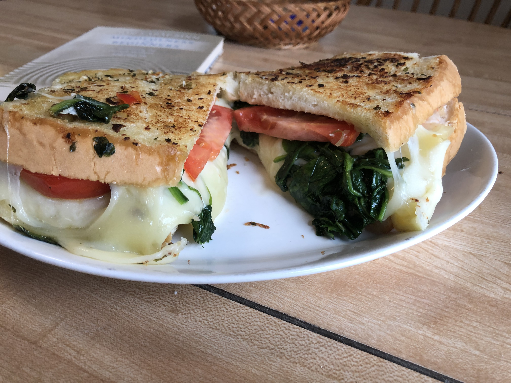

Four-Cheese Grilled Cheese Sandwich

Description
The best grilled cheese! This was created for National Grilled Cheese Sandwich Day (April 12th). Using garlic butter, hot/mild giardiniera, spinach, tomatoes, and 4 different kinds of Italian cheeses, you'll take a second look at the next grilled cheese sandwich you decide to make!
ITS SO CHEEEZY
Ingredients
- 2 tablespoons salted butter, softened
- 1 teaspoon minced garlic
- 2 thick slices Italian bread
- 1 ½ tablespoons olive oil, divided, or more as needed
- 2 cups chopped fresh spinach
- ½ cup giardiniera, drained
- 2 slices mozzarella cheese
- 2 slices provolone cheese
- 2 slices Asiago cheese
- 2 slices Fontina cheese
- 3 slices Roma tomato, cut lengthwise, or more to taste
Directions
- Mix butter and garlic in a small bowl until well combined. Spread 1/2 of the butter onto one side of each slice of bread; set aside.
- Heat 1 tablespoon oil in a large skillet over medium-low heat; stir in spinach and giardiniera. Saute until spinach is wilted and mixture is heated through, 3 to 5 minutes. Remove to a bowl and wipe out the skillet.
- Place 1 slice of bread, buttered-side down, into one side of the warm skillet. Heat 1/2 tablespoon oil in the other side of the skillet. Place mozzarella slices in the skillet and cook until soft, 1 to 2 minutes. Place mozzarella slices on top of the bread in the skillet. Repeat with the provolone, Asiago, and Fontina slices.
- Add spinach mixture and tomato slices to the skillet, adding more oil if necessary, and cook until warm, 2 to 3 minutes. Place spinach mixture on top of the cheese, followed by the tomatoes and the remaining slice of bread, buttered-side up. Flip the sandwich and cook until browned and cheese has melted, 5 to 10 minutes.
MAIN PAGE